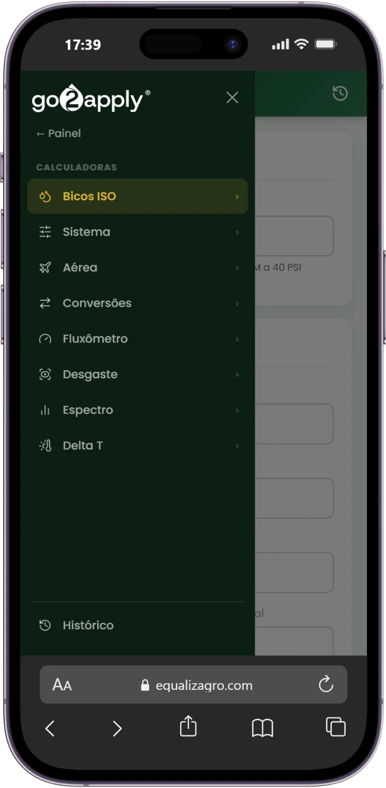

É para reduzir esse tipo de incerteza que o go2apply existe.
Na prática, o go2apply ajuda você a tomar decisões mais precisas no campo.
Antes da operação
Planejamento
Prepare a aplicação antes de entrar em campo.
- Formação de caldas com ordem e metodologia
- Alertas de incompatibilidade fitotoxicidade e entupimentos
- Kow, adjuvantes e pH mais de 400 ingredientes ativos
- Pressão e vazão ajuste por ponta e taxa
- Calibração de fluxômetro volume aplicado por hectare
- Calibração de aeronaves faixa e perfil de deposição
Durante a aplicação
Operação
Durante a aplicação, transforme condições em decisões.
- Espectro de gotas dimensionamento por condição ambiental
- Determinação de Delta T risco de evaporação conforme o DMV
Depois da aplicação
Gestão
Depois da aplicação, transforme dados em controle.
- Pontas de Pulverização CV e substituição pontual de bicos
- Geração de relatórios em todas as ferramentas
- Comunidade exclusiva suporte técnico via WhatsApp

Por dentro do go2apply
O go2apply coloca as informações certas na hora certa para apoiar suas decisões.
Ingrediente ativo
Kow, tendência de adjuvante e faixa de pH em calda
Confiança que vem do campo
+ de 10 anos de pesquisa transformando conhecimento em resultados no campo.
Ferramentas desenvolvidas pela equipe técnica da Equalizagro.
Perguntas Frequentes
Tire suas dúvidas sobre como o go2apply funciona no dia a dia da sua operação.
Não. O go2apply funciona direto no navegador, do computador ou do celular, sem precisar baixar nem instalar nada.
Sim. A metodologia é baseada na compatibilidade dos ingredientes ativos e nas condições de aplicação, não em uma cultura específica, então funciona para a maioria das operações agrícolas.
Não. As ferramentas guiam você passo a passo em cada cálculo, então dá para usar mesmo sem um conhecimento técnico aprofundado.
Sim. Não há limite de fazendas ou talhões: você organiza suas operações e acompanha cada uma separadamente dentro da plataforma.
Através do nosso WhatsApp, e da nossa comunidade no Telegram, com uma equipe técnica disponível para tirar dúvidas e orientar sobre a melhor forma de extrair ao máximo tudo que cada ferramenta pode entregar.
Fale Conosco
Estamos por perto para tirar dúvidas sobre a plataforma.
- R. General Osório, 117 - Sala 03 - Centro, Cruz Alta - RS, 98005-150
- contato@go2apply.com.br
- +55 55 3343-2606